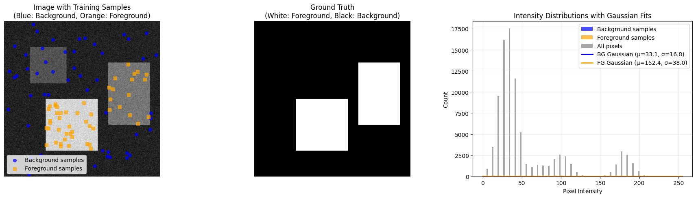
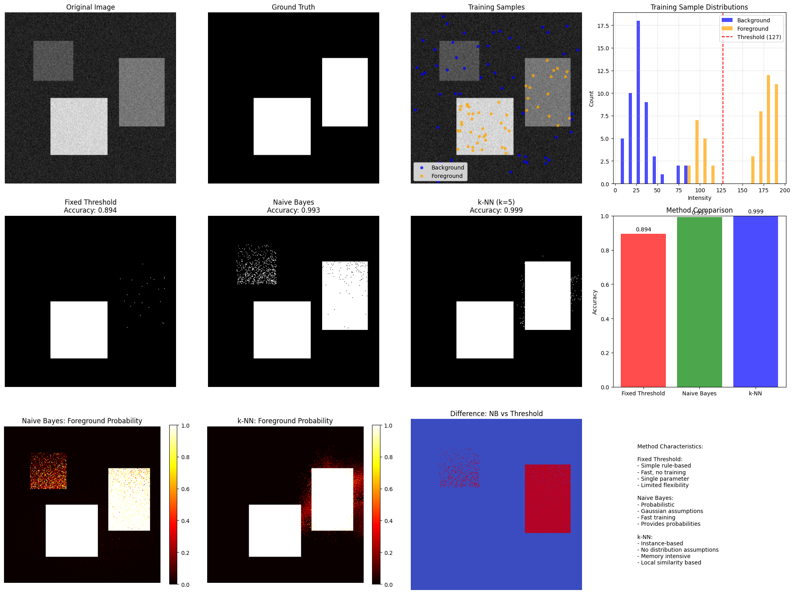

Image Segmentation: Comparing Thresholding, Naive Bayes, and k-NN#
This educational module demonstrates three different approaches to image segmentation:
Fixed Thresholding A simple rule-based method where pixels are classified based on a predetermined intensity threshold.
Naive Bayes Classifier A probabilistic approach that assumes pixel intensities follow Gaussian distributions for each class. The algorithm learns the parameters (mean and variance) from training data and applies Bayes’ theorem for classification.
k-Nearest Neighbors (k-NN) A distance-based method that classifies pixels based on the majority vote of their k-nearest neighbors in the feature space.
Learning Objectives:#
Understand the trade-offs between simple thresholding and machine learning approaches
Compare parametric (Naive Bayes) vs non-parametric (k-NN) methods
Learn how to extract and use training samples for supervised segmentation
Visualize probability distributions and decision boundaries
Key Concepts:#
Supervised Learning: Using labeled data to train classifiers
Feature Extraction: Using pixel intensity and spatial coordinates
Probability Maps: Visualizing classification confidence
Model Assumptions: Gaussian distributions vs local similarity
# --- Cell 1: Import Libraries ---
import numpy as np
import matplotlib.pyplot as plt
from sklearn.naive_bayes import GaussianNB
from sklearn.neighbors import KNeighborsClassifier
from sklearn.metrics import accuracy_score
from PIL import Image
import cv2
from skimage import data, segmentation
from scipy.stats import norm
import requests
from io import BytesIO
# --- Cell 2: Create Test Image with Known Ground Truth ---
def create_test_image_with_ground_truth(size=(300, 300)):
"""
Create a test image with known ground truth segmentation
"""
# Create image
image = np.full(size, 30, dtype=np.uint8) # Dark background
# Define regions with known labels
# Background regions (label 0)
image[50:120, 50:120] = 70 # Dark rectangle - BACKGROUND
# Foreground regions (label 1)
image[150:250, 80:180] = 180 # Bright rectangle - FOREGROUND
image[80:200, 200:280] = 100 # Medium rectangle - FOREGROUND
# Add some Gaussian noise for realism
noise = np.random.normal(0, 10, size)
image = np.clip(image.astype(np.float64) + noise, 0, 255).astype(np.uint8)
# Create ground truth mask
ground_truth = np.zeros(size, dtype=int)
ground_truth[150:250, 80:180] = 1 # Bright rectangle - FOREGROUND
ground_truth[80:200, 200:280] = 1 # Medium rectangle - FOREGROUND
# Everything else is BACKGROUND (label 0)
return image, ground_truth
def sample_training_pixels(image, ground_truth, n_samples_per_class=50):
"""
Sample training pixels from the image using ground truth
"""
# Get coordinates for each class
bg_coords = np.argwhere(ground_truth == 0)
fg_coords = np.argwhere(ground_truth == 1)
# Randomly sample from each class
np.random.seed(42)
if len(bg_coords) > n_samples_per_class:
bg_samples = bg_coords[np.random.choice(len(bg_coords), n_samples_per_class, replace=False)]
else:
bg_samples = bg_coords
if len(fg_coords) > n_samples_per_class:
fg_samples = fg_coords[np.random.choice(len(fg_coords), n_samples_per_class, replace=False)]
else:
fg_samples = fg_coords
# Combine samples
train_coords = np.vstack([bg_samples, fg_samples])
train_labels = np.hstack([np.zeros(len(bg_samples)), np.ones(len(fg_samples))])
return train_coords, train_labels.astype(int)
# --- Cell 3: Data Preparation Function ---
def prepare_data(image, train_coords, train_labels):
"""
Prepare training and test data for classifiers
"""
# Prepare training data
X_train = []
for (y, x), label in zip(train_coords, train_labels):
intensity = image[y, x]
X_train.append([intensity, x, y]) # Intensity + spatial coordinates
X_train = np.array(X_train)
y_train = train_labels
# Prepare test data (all pixels in the image)
h, w = image.shape
coordinates = np.array([[y, x] for y in range(h) for x in range(w)])
intensities = image.flatten()
X_test = np.column_stack([intensities, coordinates[:, 1], coordinates[:, 0]])
return X_train, y_train, X_test, coordinates, intensities
# --- Cell 4: Fixed Threshold Segmentation ---
def fixed_threshold_segmentation(image, threshold=100):
"""
Perform segmentation using fixed intensity threshold
"""
segmentation_result = (image > threshold).astype(int)
return segmentation_result
# --- Cell 5: Naive Bayes Segmentation ---
def naive_bayes_segmentation(X_train, y_train, X_test, image_shape):
"""
Perform segmentation using Naive Bayes classifier
"""
# Train Naive Bayes classifier
nb_classifier = GaussianNB()
nb_classifier.fit(X_train, y_train)
# Predict all pixels
nb_predictions = nb_classifier.predict(X_test)
nb_segmentation = nb_predictions.reshape(image_shape)
# Get probability maps
nb_probabilities = nb_classifier.predict_proba(X_test)
nb_bg_prob = nb_probabilities[:, 0].reshape(image_shape)
nb_fg_prob = nb_probabilities[:, 1].reshape(image_shape)
return nb_segmentation, nb_bg_prob, nb_fg_prob, nb_classifier
# --- Cell 6: k-NN Segmentation ---
def knn_segmentation(X_train, y_train, X_test, image_shape, k=5):
"""
Perform segmentation using k-NN classifier
"""
# Train k-NN classifier
knn_classifier = KNeighborsClassifier(n_neighbors=k, weights='distance')
knn_classifier.fit(X_train, y_train)
# Predict all pixels
knn_predictions = knn_classifier.predict(X_test)
knn_segmentation = knn_predictions.reshape(image_shape)
# Get probability maps
knn_probabilities = knn_classifier.predict_proba(X_test)
knn_bg_prob = knn_probabilities[:, 0].reshape(image_shape)
knn_fg_prob = knn_probabilities[:, 1].reshape(image_shape)
return knn_segmentation, knn_bg_prob, knn_fg_prob, knn_classifier
# --- Cell 7: Visualize Training Samples and Distributions ---
def visualize_training_samples_and_distributions(image, train_coords, train_labels, ground_truth):
"""
Visualize the image with training samples and intensity distributions
"""
fig, axes = plt.subplots(1, 3, figsize=(18, 5))
# Original image with training samples
axes[0].imshow(image, cmap='gray')
# Plot training samples
bg_mask = train_labels == 0
fg_mask = train_labels == 1
axes[0].scatter(train_coords[bg_mask, 1], train_coords[bg_mask, 0],
c='blue', s=30, label='Background samples', alpha=0.7, marker='o')
axes[0].scatter(train_coords[fg_mask, 1], train_coords[fg_mask, 0],
c='orange', s=30, label='Foreground samples', alpha=0.7, marker='s')
axes[0].set_title('Image with Training Samples\n(Blue: Background, Orange: Foreground)')
axes[0].legend()
axes[0].axis('off')
# Ground truth
axes[1].imshow(ground_truth, cmap='gray')
axes[1].set_title('Ground Truth\n(White: Foreground, Black: Background)')
axes[1].axis('off')
# Enhanced histogram with Gaussian distributions
all_intensities = image.flatten()
bg_intensities = [image[y, x] for (y, x), label in zip(train_coords, train_labels) if label == 0]
fg_intensities = [image[y, x] for (y, x), label in zip(train_coords, train_labels) if label == 1]
# Plot histogram
n, bins, patches = axes[2].hist([bg_intensities, fg_intensities, all_intensities],
bins=30, alpha=0.7,
label=['Background samples', 'Foreground samples', 'All pixels'],
color=['blue', 'orange', 'gray'],
stacked=False)
# Fit Gaussian distributions to the samples
x_range = np.linspace(0, 255, 1000)
if len(bg_intensities) > 1:
bg_mean, bg_std = np.mean(bg_intensities), np.std(bg_intensities)
bg_gaussian = norm.pdf(x_range, bg_mean, bg_std) * len(bg_intensities) * (bins[1] - bins[0])
axes[2].plot(x_range, bg_gaussian, 'b-', linewidth=2, label=f'BG Gaussian (μ={bg_mean:.1f}, σ={bg_std:.1f})')
if len(fg_intensities) > 1:
fg_mean, fg_std = np.mean(fg_intensities), np.std(fg_intensities)
fg_gaussian = norm.pdf(x_range, fg_mean, fg_std) * len(fg_intensities) * (bins[1] - bins[0])
axes[2].plot(x_range, fg_gaussian, 'orange', linewidth=2, label=f'FG Gaussian (μ={fg_mean:.1f}, σ={fg_std:.1f})')
axes[2].set_xlabel('Pixel Intensity')
axes[2].set_ylabel('Count')
axes[2].set_title('Intensity Distributions with Gaussian Fits')
axes[2].legend()
axes[2].grid(True, alpha=0.3)
plt.tight_layout()
plt.show()
# Print statistics
print(f"Background samples: {len(bg_intensities)}")
print(f"Foreground samples: {len(fg_intensities)}")
if len(bg_intensities) > 1:
print(f"Background - Mean: {np.mean(bg_intensities):.2f}, Std: {np.std(bg_intensities):.2f}")
if len(fg_intensities) > 1:
print(f"Foreground - Mean: {np.mean(fg_intensities):.2f}, Std: {np.std(fg_intensities):.2f}")
# --- Cell 8: Compare All Segmentation Methods ---
def compare_all_segmentation_methods(image, ground_truth, train_coords, train_labels):
"""
Compare Fixed Threshold, Naive Bayes, and k-NN segmentation results
"""
# Prepare data
X_train, y_train, X_test, coordinates, intensities = prepare_data(image, train_coords, train_labels)
h, w = image.shape
# Apply all three methods
# 1. Fixed Threshold
threshold = 127 # You can adjust this value
threshold_seg = fixed_threshold_segmentation(image, threshold)
# 2. Naive Bayes
nb_seg, nb_bg_prob, nb_fg_prob, nb_clf = naive_bayes_segmentation(
X_train, y_train, X_test, (h, w))
# 3. k-NN
knn_seg, knn_bg_prob, knn_fg_prob, knn_clf = knn_segmentation(
X_train, y_train, X_test, (h, w), k=5)
# Calculate accuracies
threshold_accuracy = accuracy_score(ground_truth.flatten(), threshold_seg.flatten())
nb_accuracy = accuracy_score(ground_truth.flatten(), nb_seg.flatten())
knn_accuracy = accuracy_score(ground_truth.flatten(), knn_seg.flatten())
# Visualize results
fig, axes = plt.subplots(3, 4, figsize=(20, 15))
# Row 1: Original and Ground Truth
axes[0, 0].imshow(image, cmap='gray')
axes[0, 0].set_title('Original Image')
axes[0, 0].axis('off')
axes[0, 1].imshow(ground_truth, cmap='gray')
axes[0, 1].set_title('Ground Truth')
axes[0, 1].axis('off')
# Training samples on original image
axes[0, 2].imshow(image, cmap='gray')
bg_mask = train_labels == 0
fg_mask = train_labels == 1
axes[0, 2].scatter(train_coords[bg_mask, 1], train_coords[bg_mask, 0],
c='blue', s=20, alpha=0.7, label='Background')
axes[0, 2].scatter(train_coords[fg_mask, 1], train_coords[fg_mask, 0],
c='orange', s=20, alpha=0.7, label='Foreground')
axes[0, 2].set_title('Training Samples')
axes[0, 2].legend()
axes[0, 2].axis('off')
# Intensity histogram with distributions
bg_intensities = [image[y, x] for (y, x), label in zip(train_coords, train_labels) if label == 0]
fg_intensities = [image[y, x] for (y, x), label in zip(train_coords, train_labels) if label == 1]
axes[0, 3].hist([bg_intensities, fg_intensities], bins=20, alpha=0.7,
label=['Background', 'Foreground'], color=['blue', 'orange'])
axes[0, 3].axvline(threshold, color='red', linestyle='--', label=f'Threshold ({threshold})')
axes[0, 3].set_xlabel('Intensity')
axes[0, 3].set_ylabel('Count')
axes[0, 3].set_title('Training Sample Distributions')
axes[0, 3].legend()
axes[0, 3].grid(True, alpha=0.3)
# Row 2: Segmentation Results
# Fixed Threshold
axes[1, 0].imshow(threshold_seg, cmap='gray')
axes[1, 0].set_title(f'Fixed Threshold\nAccuracy: {threshold_accuracy:.3f}')
axes[1, 0].axis('off')
# Naive Bayes
axes[1, 1].imshow(nb_seg, cmap='gray')
axes[1, 1].set_title(f'Naive Bayes\nAccuracy: {nb_accuracy:.3f}')
axes[1, 1].axis('off')
# k-NN
axes[1, 2].imshow(knn_seg, cmap='gray')
axes[1, 2].set_title(f'k-NN (k=5)\nAccuracy: {knn_accuracy:.3f}')
axes[1, 2].axis('off')
# Accuracy comparison bar plot
methods = ['Fixed Threshold', 'Naive Bayes', 'k-NN']
accuracies = [threshold_accuracy, nb_accuracy, knn_accuracy]
colors = ['red', 'green', 'blue']
bars = axes[1, 3].bar(methods, accuracies, color=colors, alpha=0.7)
axes[1, 3].set_ylabel('Accuracy')
axes[1, 3].set_title('Method Comparison')
axes[1, 3].set_ylim(0, 1)
for bar, accuracy in zip(bars, accuracies):
height = bar.get_height()
axes[1, 3].text(bar.get_x() + bar.get_width()/2., height + 0.01,
f'{accuracy:.3f}', ha='center', va='bottom')
# Row 3: Probability Maps
# Naive Bayes probability
prob_nb = axes[2, 0].imshow(nb_fg_prob, cmap='hot', vmin=0, vmax=1)
axes[2, 0].set_title('Naive Bayes: Foreground Probability')
axes[2, 0].axis('off')
plt.colorbar(prob_nb, ax=axes[2, 0], fraction=0.046)
# k-NN probability
prob_knn = axes[2, 1].imshow(knn_fg_prob, cmap='hot', vmin=0, vmax=1)
axes[2, 1].set_title('k-NN: Foreground Probability')
axes[2, 1].axis('off')
plt.colorbar(prob_knn, ax=axes[2, 1], fraction=0.046)
# Differences
diff_nb_thresh = np.abs(nb_seg - threshold_seg)
axes[2, 2].imshow(diff_nb_thresh, cmap='coolwarm', vmin=0, vmax=1)
axes[2, 2].set_title('Difference: NB vs Threshold')
axes[2, 2].axis('off')
# Method descriptions
axes[2, 3].axis('off')
desc_text = """
Method Characteristics:
Fixed Threshold:
- Simple rule-based
- Fast, no training
- Single parameter
- Limited flexibility
Naive Bayes:
- Probabilistic
- Gaussian assumptions
- Fast training
- Provides probabilities
k-NN:
- Instance-based
- No distribution assumptions
- Memory intensive
- Local similarity based
"""
axes[2, 3].text(0.1, 0.5, desc_text, transform=axes[2, 3].transAxes,
fontsize=10, verticalalignment='center')
plt.tight_layout()
plt.show()
return (threshold_seg, nb_seg, knn_seg,
threshold_accuracy, nb_accuracy, knn_accuracy)
# --- Cell 9: Main Execution ---
def main():
"""
Main function to demonstrate all segmentation methods
"""
print("Image Segmentation: Fixed Threshold vs Naive Bayes vs k-NN")
print("=" * 60)
# Create test image with known ground truth
print("Creating test image with ground truth...")
image, ground_truth = create_test_image_with_ground_truth()
# Sample training pixels
print("Sampling training pixels...")
train_coords, train_labels = sample_training_pixels(image, ground_truth, n_samples_per_class=50)
# Visualize training samples and distributions
print("Visualizing training data and distributions...")
visualize_training_samples_and_distributions(image, train_coords, train_labels, ground_truth)
# Compare all segmentation methods
print("Comparing segmentation methods...")
results = compare_all_segmentation_methods(image, ground_truth, train_coords, train_labels)
print("\n" + "=" * 60)
print("FINAL RESULTS SUMMARY")
print("=" * 60)
print(f"Fixed Threshold Accuracy: {results[3]:.3f}")
print(f"Naive Bayes Accuracy: {results[4]:.3f}")
print(f"k-NN Accuracy: {results[5]:.3f}")
if __name__ == "__main__":
main()
Image Segmentation: Fixed Threshold vs Naive Bayes vs k-NN
============================================================
Creating test image with ground truth...
Sampling training pixels...
Visualizing training data and distributions...

Background samples: 50
Foreground samples: 50
Background - Mean: 33.06, Std: 16.81
Foreground - Mean: 152.44, Std: 38.00
Comparing segmentation methods...

============================================================
FINAL RESULTS SUMMARY
============================================================
Fixed Threshold Accuracy: 0.894
Naive Bayes Accuracy: 0.993
k-NN Accuracy: 0.999
For more information about alpha-matting - which is discussed in tha class - see these refrences: [Ras16, Zan18]